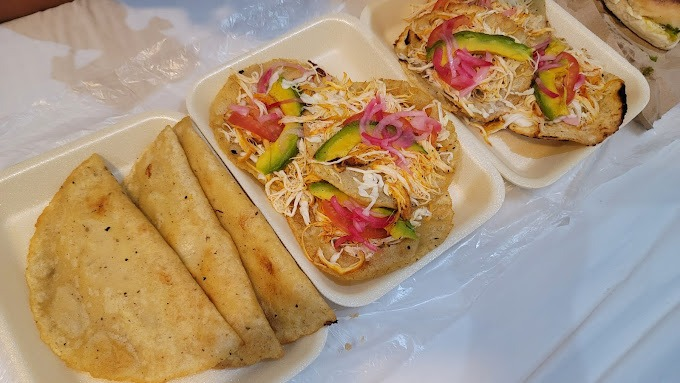
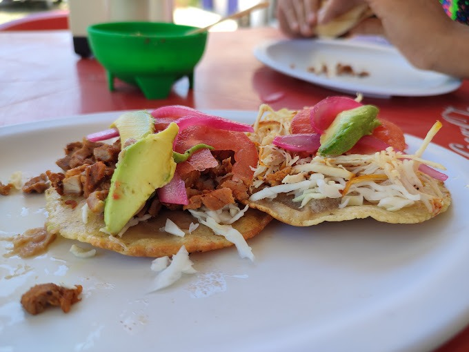
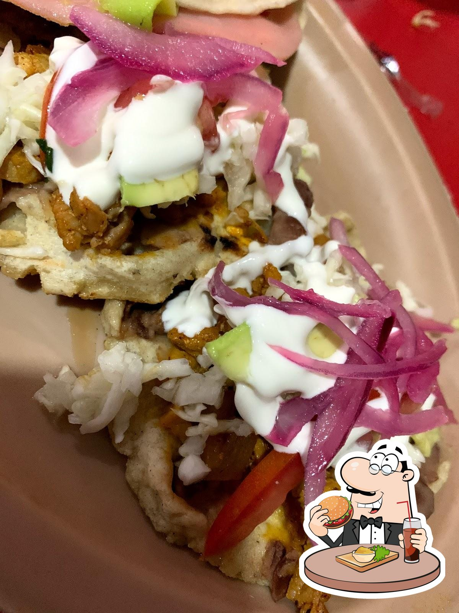

Bienvenidos a Antojitos Laguna Magica
El restaurante Antojitos “Laguna mágica” tiene cómo dueña a la Señora Rosalba Hernández Quiroz, donde vende platillos típicos del estado de Quintana Roo, México. El restaurante es un local pequeño de 5 mesas situado al lado de la plaza municipal y el Fuerte de Bacalar, justo en la esquina de la calle 20 con la avenida 7. La carta es económica y hacen todo tipo de antojitos; quesadillas, picaditas, empanadas, salbutes, tacos dorados y frijoles entre otros muchos platos de comida típica de la región. Es un local sencillo, con mesas y sillas de plástico, un pequeño baño


